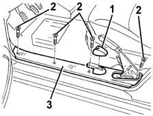
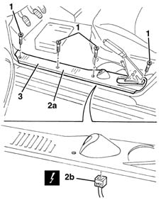

7040L40 REAR COMPARTMENT SCUFF STRIP - R R
- Path
- Procedures > 70 FITTINGS > 7040 BODYSHELL INTERIOR TRIMS AND FITTINGS > 7040L CABIN FLOOR COVERING > 7040L40 REAR COMPARTMENT SCUFF STRIP - R R
- Kind
- repair procedure (removal / refitting; the operation number is the code)
- Applies to
- all engines; all production periods
- Interactive page
- https://sloeber94.github.io/elrnDB-fMltpl/en/#/2892212
Applies to: all engines; production: fino a 05/99, da 06/99 a 03/02
 Removing
Removing
 Refitting
Refitting3380A44 handbrake/linkage protection - r+r
(left side only)
1. Remove the tailgate catch trim (left side only).
2. Undo the bolts.
3. Remove the running board.

Applies to: all engines; production: fino a 05/99, da 06/99 a 03/02
Refitting
RemovingCheck that the kick plate is undamaged.
Position the running board and secure it using the bolts.
Fit the tailgate catch trim (left side only).
3380A44 handbrake/linkage protection - r+r
(left side only)
Applies to: all engines; production: da 09/03, da 04/02 a 08/03, da 06/04, fino a 05/04
Removing
RefittingSee Op. 3380A44 (left side only)
Open the left front door.
1. Undo the bolts fixing the running boards.
2. For the left running board only: move the running board (2a) and disconnect the electrical connection (2b).
 | Name | Connector |
|---|---|---|
2b | Boot opening switch |
3. For the right running board only: Remove the running board.

Applies to: all engines; production: da 09/03, da 04/02 a 08/03, da 06/04, fino a 05/04
Refitting
RemovingCheck that the kick plate is undamaged.
For the left running board only: Connect the electrical connection.
Place the running board in position.
Tighten the bolts fixing the running boards.
See Op. 3380A44 (left side only)
Topics linked from this page (2)
Topics that link to this page (9)
- 3380A10 handbrake lever - r+r
- 5010B46 central air duct to rear seat - arrange
- 5505C41 cabin wiring - r r
- 5580M80 on-board navigator system wiring harness - r r
- 7005A34 front side door compartment seal r r
- 7015B42 TAILGATE OPENING INTERIOR CONTROL - R+R
- 7015B44 tail gate catch control cable - r+r
- 7040L13 passenger compartment floor soundproofing - r r
- 7040L17 passenger compartment floor front carpet - r r